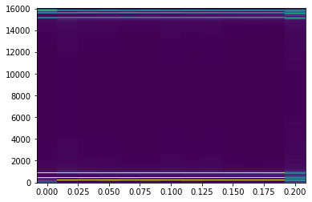

cepstrum解析実装¶

音声の準備¶
[1]:
import numpy as np
import cmath
import matplotlib.pyplot as plt
[2]:
from typing import List
def make_sin_waves(
max_amp: float,
freq_list: List[str],
fs: int,
sec: float) -> List[float]:
"""
max_amp: 最大振幅
freq_list: まぜる周波数
fs: サンプリング周波数
sec: サイン波の持続時間
"""
amp = float(max_amp) / len(freq_list) # 各波の最大振幅を設定
data = []
for n in np.arange(sec * fs):
s = 0.0
for f in freq_list:
s += amp * np.sin(2 * cmath.pi * f * n / fs)
data.append(s)
return data
[3]:
max_amp = 0.1
freq_list = [220, 440, 880]
fs = 16000
sec = 0.2
[4]:
data = make_sin_waves(max_amp, freq_list, fs, sec)
[5]:
time = [round(i/fs, 5) for i in range(len(data))]
plt.plot(time[0:160], data[0:160])
plt.xlabel("time[t]")
plt.ylabel("Amplitude")
plt.show()
[6]:
import IPython.display
IPython.display.Audio(data=data, rate=fs)
[6]:
DFT¶
[7]:
def dft(x):
N = len(x)
A = np.arange(N)
k = A.reshape(1, -1)
t = A.reshape(-1, 1)
X = x * cmath.e**(-1j * 2 * cmath.pi * k * t / N)
return np.sum(X, axis=1)
パワースペクトラム¶
[8]:
a = np.abs(dft(data))**2
f = [round(i/sec) for i in range(a.size)]
plt.plot(f,a)
plt.show()

STFT¶
参考
https://jp.mathworks.com/help/signal/ref/stft.html
https://tips-memo.com/python-stft
[9]:
def window(win_length, a=0.54, b=0.46):
data = []
for i in range(win_length):
data.append(a + b * np.cos(2 * cmath.pi * i / win_length))
return data
[10]:
def stft(x, N=2048, hop=0.5):
S = int(N * hop) # intは切り捨て
# 窓関数をかける時に端点が問題になるため、paddingを行う
# 反転パディングなるものがある
pad_first = x[:S]
pad_last = x[-S:][::-1]
x_pad = np.concatenate([pad_first, x, pad_last])
# 窓関数を適用する回数
M = int((x_pad.size - S)/(N - S))
# ハミング窓
hamm = window(N)
# 結果を格納する箱
spec = []
for m in range(M):
# 窓関数の適応
windowed_x = x_pad[m*S:m*S+N] * hamm
# dft
spec.append(dft(windowed_x))
return spec
[18]:
def plot_spec(specgram, sec, fs):
amp = np.abs(specgram).T
t = np.linspace(0, fs, amp.shape[0])
f = np.linspace(0, sec, amp.shape[1])
plt.pcolormesh(f, t, amp, shading='auto')
[17]:
specgram = stft(data, N=512, hop = 0.5)
[19]:
plot_spec(specgram, sec, fs)

実際のところ¶
[ ]:
!pip install librosa
[ ]:
import librosa
import librosa.display
[ ]:
D = librosa.stft(y) # STFT of y
S_db = librosa.amplitude_to_db(np.abs(D), ref=np.max)
[ ]:
plt.figure()
librosa.display.specshow(S_db)
plt.colorbar()